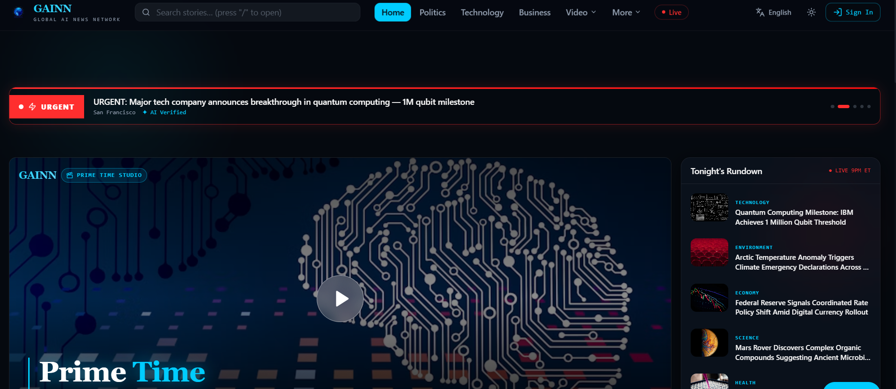

Live · 2,000+ signupsMulti-agentInformation intelligence
GAINN
From information overload to understanding.
A multi-agent news pipeline that separates drafting from quality control so publishing is not one opaque generation pass.
FlowRaw information → research → draft → QC → context.
Why it existsGeneration is not usefulness; verification needs a separate responsibility boundary.
LIVE PRODUCT ↗

ACTUAL PRODUCT UI · GAINN